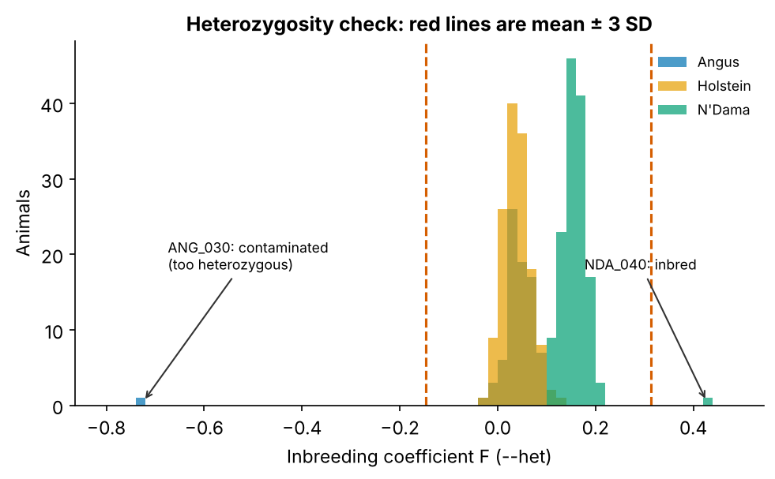
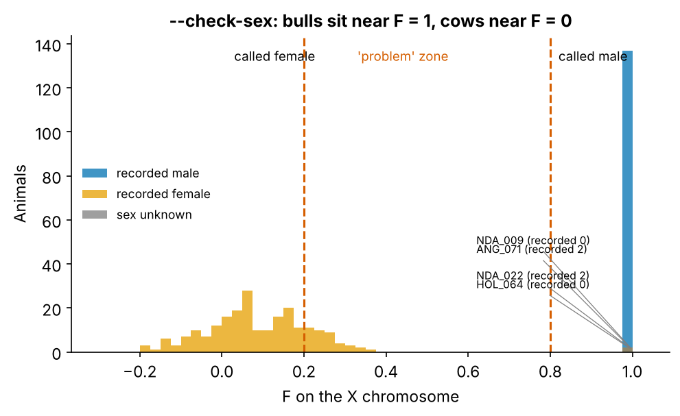

8 Sample checks: sex, pedigree and heterozygosity
Missingness tells you whether a sample was genotyped well. These three checks tell you whether it is the animal you think it is: the right sex, the right parents, and one animal rather than a mixture of two.
8.1 Heterozygosity and inbreeding
Every animal has an expected number of homozygous genotypes, given the allele frequencies in the population. PLINK compares observed and expected homozygosity with the inbreeding coefficient F:
\[ F = \frac{O(\text{HOM}) - E(\text{HOM})}{N - E(\text{HOM})} \]
where O(HOM) is the observed number of homozygous SNPs, E(HOM) the expected number and N the number of SNPs with a genotype.
| F | Meaning |
|---|---|
| Near 0 | Normal |
| Clearly positive | Too many homozygotes: the parents were related (inbreeding) |
| Clearly negative | Too many heterozygotes: almost always contaminated DNA (two animals mixed), occasionally a cross between very different breeds |
8.1.1 Step 1: prune SNPs in LD, then run --het
Neighbouring SNPs in strong LD carry the same information, so one region would be counted many times. Prune first (Chapter 9 explains how):
plink --bfile cattle --cow --autosome --indep-pairwise 50 5 0.2 --out prune
plink --bfile cattle --cow --extract prune.prune.in --het --out het FID IID O(HOM) E(HOM) N(NM) F
ANG ANG_030 1727 2497 3561 -0.7243
HOL HOL_077 2459 2496 3559 -0.0346
NDA NDA_040 2953 2498 3562 0.4274
- ANG_030, F = -0.72: far too heterozygous. This is the planted contaminated sample: wherever the two mixed animals differ, the machine sees both alleles and calls a heterozygote.
- NDA_040, F = 0.43: highly inbred. This is the planted inbred animal.
- The N’Dama as a group sit to the right (mean F = 0.16 against 0.04 for the other breeds). F is measured against pooled frequencies here, so the most distinct breed looks inbred. Compute F within breed when you want to compare animals fairly.
A common rule is to remove any animal whose F lies over three standard deviations away from the average.
--ibc gives three other estimators of F, computed SNP by SNP from the genotype and the allele frequency, the way the diagonal of the GRM is (Yang and colleagues, 2011):
plink --bfile cattle --cow --autosome --ibc --out ibc
grep -E "IID|ANG_001|ANG_030|NDA_040" ibc.ibcFID IID NOMISS Fhat1 Fhat2 Fhat3
ANG ANG_001 4525 0.307509 0.0491274 0.186937
ANG ANG_030 4526 -0.0301018 -0.792053 -0.402461
NDA NDA_040 4526 0.158754 0.486591 0.3314Fhat1 is the variance-based estimate (the GRM diagonal minus 1), Fhat2 is based on excess homozygosity, much like --het, and Fhat3 is the correlation between uniting gametes, the one most often used in livestock genomics. They agree on the extremes (the contaminated ANG_030 is negative on Fhat2 and Fhat3, the inbred NDA_040 is high), but for ordinary animals they can differ a lot: ANG_001 has 0.31, 0.05 and 0.19. Like --het, all three depend on the allele frequencies, here pooled over three breeds, so compare animals within a breed and say which estimator you report. Chapter 10 adds a measure that needs no allele frequencies, F_ROH, from runs of homozygosity.
8.2 Sex check from the X chromosome
A bull has one X chromosome, so all his X SNPs look homozygous: F on the X is near 1. A cow has two X chromosomes and is often heterozygous: F near 0. PLINK compares this with the recorded sex.
plink --bfile cattle --cow --check-sex --out sexcheck--check-sex: 246 Xchr and 0 Ychr variant(s) scanned, 44 problems detected.
FID IID PEDSEX SNPSEX STATUS F
ANG ANG_071 2 1 PROBLEM 1
NDA NDA_022 2 1 PROBLEM 1
HOL HOL_064 0 1 PROBLEM 1
NDA NDA_009 0 1 PROBLEM 1
ANG ANG_001 2 0 PROBLEM 0.2541
- ANG_071 and NDA_022 are recorded as cows (2) but have F = 1. They are bulls: real sex errors.
- HOL_064 and NDA_009 had no recorded sex (0). Genetically they are bulls.
- The other 40 “problems” are cows with F between 0.2 and 0.5. They are not errors. As with the Wahlund effect, mixing breeds inflates F. Run
--check-sexwithin each breed and the 44 problems fall to 11, still including the four real ones.
8.2.1 Adjusting the sex check
The default calls an animal female when its X-chromosome F is below 0.2 and male when it is above 0.8. You can move both thresholds, and you can let PLINK write the genetic sex into the .fam. Here is what each option did on our data:
plink --bfile cattle --cow --check-sex 0.3 0.7 --out sex_37 # female if F < 0.3, male if F > 0.7
plink --bfile cattle --cow --check-sex ycount --out sex_y # also count Y-chromosome calls
plink --bfile cattle --cow --impute-sex --make-bed --out cattle_sexedsex_37: --check-sex: 246 Xchr and 0 Ychr variant(s) scanned, 10 problems detected.
sex_y: Warning: No Y chromosome data for --check-sex ycount.
cattle_sexed: --impute-sex: 246 Xchr and 0 Ychr variant(s) scanned, 321/361 sexes imputed.- Widening the thresholds (0.3 and 0.7) cut the problems from 44 to 10, still including the four real ones. Most of the other “problems” were cows with F between 0.2 and 0.3, which the breed mixture had pushed up. Widening the window is fine when you can see a clear gap in the F histogram; run the check within breed if you cannot.
ycountalso uses the number of non-missing Y-chromosome calls, which separates the sexes much better when the chip has Y SNPs. Our simulated chip has none, so PLINK warns and falls back on the X alone. Real cattle chips usually include some Y SNPs; check that they are coded as chromosome Y (31 with--cow) in your.bim.--impute-sexwrites the genetic sex into the new.fam: 141 bulls, 180 cows and 40 animals set to 0 (unknown). Those 40 were cows whose F fell between 0.2 and 0.8. They were correctly recorded as cows before; afterwards PLINK 1.9 ignores their phenotypes in association tests unless you add--allow-no-sex. So never apply--impute-sexblindly: fix the few clear errors with--update-sex(Chapter 5) instead.
8.3 Mendel errors: checking the pedigree
A calf gets one allele from its sire and one from its dam. If both parents are AA, the calf must be AA. A calf that is AG breaks Mendel’s law; this is a Mendel error. Many errors in one family point to a wrong parent. Many errors at one SNP point to a bad SNP.
plink --bfile cattle --cow --mendel --out mendel--me/--mendel: 877 Mendel errors detected.| File | One line per | What we found |
|---|---|---|
mendel.mendel |
error | HOL_F03 HOL_F03_C2 1 snp00028 1 G/G x G/G -> G/A |
mendel.fmendel |
family | HOL_F03: 536 errors; next worst family: 20 |
mendel.imendel |
animal | HOL_F03_S 535, HOL_F03_C2 534, HOL_F03_D 268 |
mendel.lmendel |
SNP | worst SNP: 26 errors |
Read the family line like a detective. The calf HOL_F03_C2 and its recorded sire share 534 errors, while the dam has only half as many. Most errors involve the sire, so the recorded sire is wrong. Chapter 10 identifies the real sire.
After removing that calf, 343 errors remained, and the SNPs with the most errors (26, 23, 22 …) were all SNPs with heterozygote-calling errors from Chapter 7. Two independent checks pointing at the same SNPs is reassuring.
The CODE column tells you the error type. Code 1 means both parents are homozygous for the same allele but the calf is heterozygous; codes 3 to 6 mean the calf is homozygous for an allele that one parent does not carry, which points at that parent.
To act on the errors:
# remove families with > 5% errors and SNPs with > 10% errors
plink --bfile cattle --cow --me 0.05 0.1 --make-bed --out me_filtered
# or keep everything but set the offending genotypes to missing
plink --bfile cattle --cow --set-me-missing --make-bed --out me_missing--me 0.05 0.1 removed the three animals of family HOL_F03 and exactly the 12 SNPs with calling errors. Note that it drops the whole nuclear family; if you only want to drop the wrong calf, use --remove. PLINK only checks the trios written in the .fam, so a pedigree you have not entered is never checked.
--het, --check-sex (with max-female-xf= and min-male-xf=), --impute-sex and --mendel all exist. --mendel-duos also checks sire-calf and dam-calf pairs when the other parent is missing, which is common in livestock.
8.4 Exercises
Try each question first, then open the answer. The challenge goes a step further than the chapter.
1. In the --het output (autosomes), which animal has the highest F and which has the lowest? What do you think happened to each?
Highest: NDA_040, F = 0.42, an inbred animal (it also carries the longest runs of homozygosity in Chapter 10). Lowest: ANG_030, F = −0.72, far more heterozygous than expected, the sign of a DNA sample mixed with another animal’s DNA.
2. Which family has the most Mendel errors in mendel.fmendel?
sort -k5,5nr mendel.fmendel | head puts HOL_F03 first with 536 errors, against 14 to 20 for the other families. That family holds the calf with the wrong recorded sire.
Challenge. --check-sex with the defaults reports 44 problems, but the simulation flipped the sex of only 4 animals. Where do the others come from? Which flag settings bring the list down, and what risk do they carry?
Four are real: ANG_071 and NDA_022 (sex recorded wrongly) and HOL_064 and NDA_009 (sex recorded as 0). The other 40 are cows with an X-chromosome F between 0.20 and 0.36, pushed above the 0.2 limit because three breeds are pooled. With --check-sex 0.3 0.7, 10 problems remain: the four real ones and six cows with F between 0.30 and 0.36. The risk is that a looser limit can hide a real error, so always plot the X F values (the figure above) before choosing limits, or run the check within each breed.